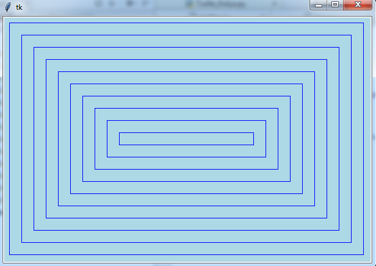

Скопируйте в новый документ текст программы и запустите её:
from tkinter import *
import time
def wait(seconds):
# Эта функция задаёт паузу заданной длительности
time.sleep(seconds)
root.update()
def draw():
# Эта функция запускается при нажатии на кнопку. Она удаляет всё с холста и запускает функцию draw_lines()
canv.delete(ALL)
root.update()
draw_lines()
root.update()
def draw_lines():
######################################################
# Начало моего кода
######################################################
n1 = scale1.get() # переменной N1 присваивается значение, установленное на первой шкале
n2 = scale2.get() # переменной N2 присваивается значение, установленное на второй шкале
x1 = 50
y1 = 50
x2 = XMAX - 50
y2 = YMAX - 50
# создаётся отрезок с координатами концов (x1, y1) и (x2, y2):
canv.create_line(x1, y1, x2, y2, fill="blue")
# создаётся прямоугольник с вершинами (x1, y1), (x1, y2), (x2, y1) и (x2, y2):
canv.create_rectangle(x1, y1, x2, y2, outline="blue", width=1)
######################################################
# Конец моего кода
######################################################
# Начало основной программы
XMAX = 600 # ширина холста
YMAX = 400 # высота холста
MIN = 5 # минимальное значение на шкале
MAX = 50 # максимальное значение на шкале
# Создаётся графическое окно, на которое ссылается переменная root
root = Tk()
# Создаётся холст размером XMAX на YMAX, на который ссылается переменная canv
canv = Canvas(root, width=XMAX, height=YMAX, bg="lightblue")
# Создаются две шкалы, на которых можно задавать значения переменных
scale1 = Scale(root, orient=VERTICAL, length=YMAX - 50,
from_=MIN, to=MAX, tickinterval=0)
scale2 = Scale(root, orient=VERTICAL, length=YMAX - 50,
from_=MIN, to=MAX, tickinterval=0)
# Создаётся кнопка, запускающая функции рисования
button1 = Button(root, text="Draw", command=draw) # при нажатии на кнопку запускается функция draw()
# Созданные объекты размещаются в окне
canv.grid(row=0, column=0, rowspan=2) # холст занимает две ячейки сетки, объединённые по вертикали
scale1.grid(row=0, column=1)
scale2.grid(row=0, column=2)
button1.grid(row=1, column=1, columnspan=2) # кнопка занимает две ячейки сетки, объединённые по горизонтали
# Графическое окно выводится на экран и готово реагировать на события
root.mainloop()
A. Нужно изменить программу так, чтобы она рисовала n1 вертикальных линий и n2 горизонтальных (и все они были видны!):
Проверьте работу программы при разных значениях n1 и n2 (рисунок сделан для n1 = n2).
B. Измените программу так, чтобы она рисовала линии под углом 45 градусов. На шкале задаётся диагональ клеточки diag в пикселях (переменной diag нужно присвоить значение, установленное на первой шкале, а вторую шкалу убрать или не использовать).
Подсказка: линии могут начинаться и заканчиваться за пределами холста (при этом координаты x и y могут быть отрицательными или больше XMAX и YMAX).
Проверьте работу программы при разных значениях диагонали diag.
C. Измените программу так, чтобы она рисовала отрезки, начинающиеся на одной стороне прямоугольника и заканчивающиеся на другой перпендикулярной стороне, как на рисунке. Расстояния между концами отрезков одинаковы и равны dist (можно сделать холст квадратным):
Проверьте работу программы при разных значениях расстояния dist.
D. Измените программу так, чтобы она рисовала сетку из равносторонних треугольников. На шкале задаётся сторона треугольника в пикселях.
E. Измените программу так, чтобы она рисовала сетку из ромбов. Задаётся расстояни x_dist между линиями по горизонтали и расстояние y_dist между линиями по вертикали.
F. Измените программу так, чтобы она рисовала картинку из прямоугольников. На шкале задаётся расстояние между прямоугольниками dist, а программа сама рассчитывает, сколько их нужно нарисовать.

Проверьте работу программы при XMAX < YMAX.
G. Измените программу так, чтобы она рисовала "лесенку" из прямоугольников. На шкале задаётся расстояние между прямоугольниками dist, а программа сама рассчитывает, сколько их нужно нарисовать.
H. Измените программу из задачи F или G так, чтобы она рисовала закрашенные прямоугольники:
Чтобы нарисовать закрашенный прямоугольник, задайте значение параметра fill, чтобы задать толщину контура - параметр width, например:
canv.create_rectangle(100, 100, 300, 200, outline="blue", fill = "white", width = 1)
Задайте в начале программы последовательность (tuple) цветов в шестнадцатеричной кодировке, например:
colours = '#FF0000', '#FF8000', '#FFFF00', '#00FF00', '#00FFFF', '#0000FF', '#7000FF'
Сделайте так, чтобы цвет следующего прямоугольника брался из этой последовательности, и цвета циклически повторялись.
J. Объедините несколько программ в одну: сделайте несколько кнопок, каждая из которых будет запускать рисование своей картинки (шкалы оставьте общие).